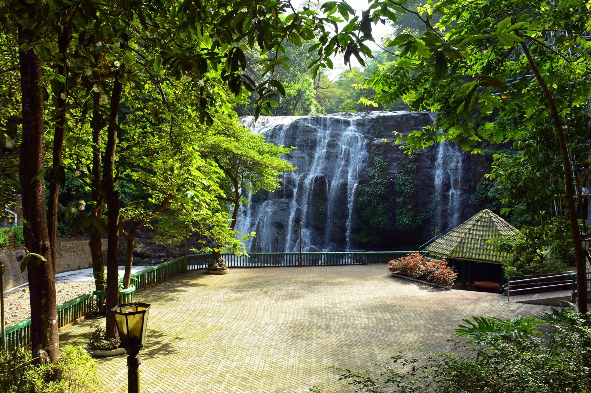
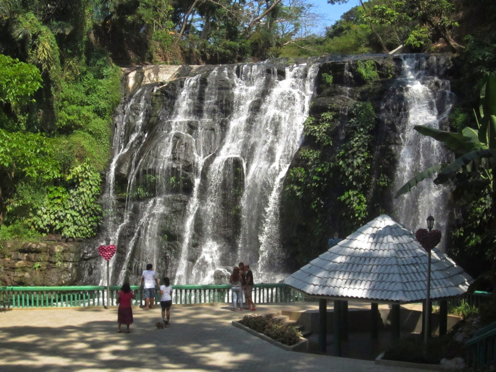
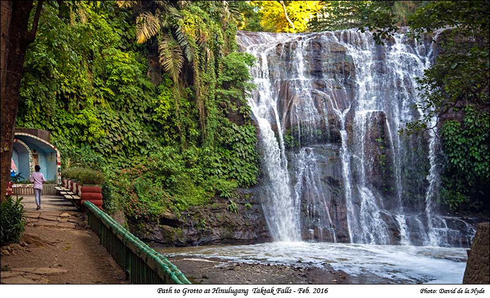

Location:
Taktak Rd., Antipolo, Rizal.
Best for: Families, Day-Trippers, and Recreational Climbers.
Vibe: Nostalgic, Active, and Community-Focused.


Hinulugang Taktak
From a Classic Summer Getaway to a Modern Adventure Park.
Hinulugang Taktak is a name that resonates with Filipino history. Once the premier weekend destination of the 1950s, it has been revitalized into a National Historical Landmark that blends nostalgic beauty with modern adventure.
Taktak Rd., Antipolo, Rizal.

